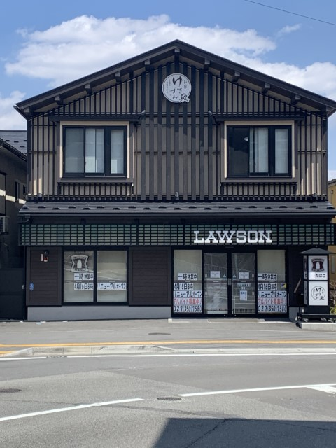
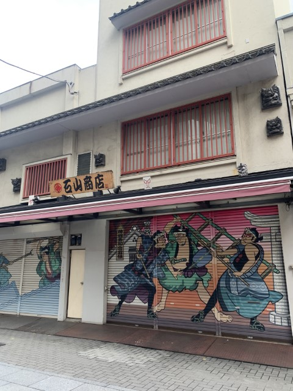
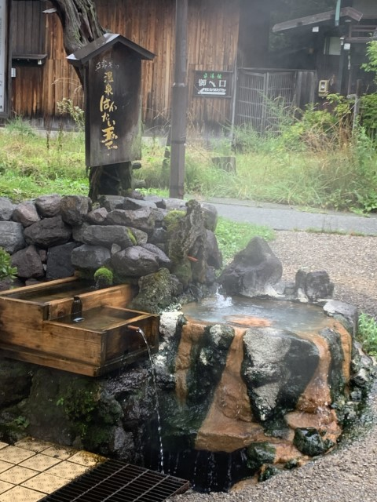

第2回
2020年4月に私が草津温泉で撮った写真

普段、地元で見る青と白を基調とした看板ではなく、草津温泉の昔ながらの雰囲気に溶け込んでいる看板になっている。
2022年5月に私が浅草で撮った写真

浅草に出店している服屋。この写真は看板よりも、浅草の雰囲気に合った絵が描かれているシャッターに目がいく。
2022年8月に私が飛騨高山で撮った写真

温泉卵を売っているお店。看板の元に温泉を連想させる物が置かれていて印象的だった。